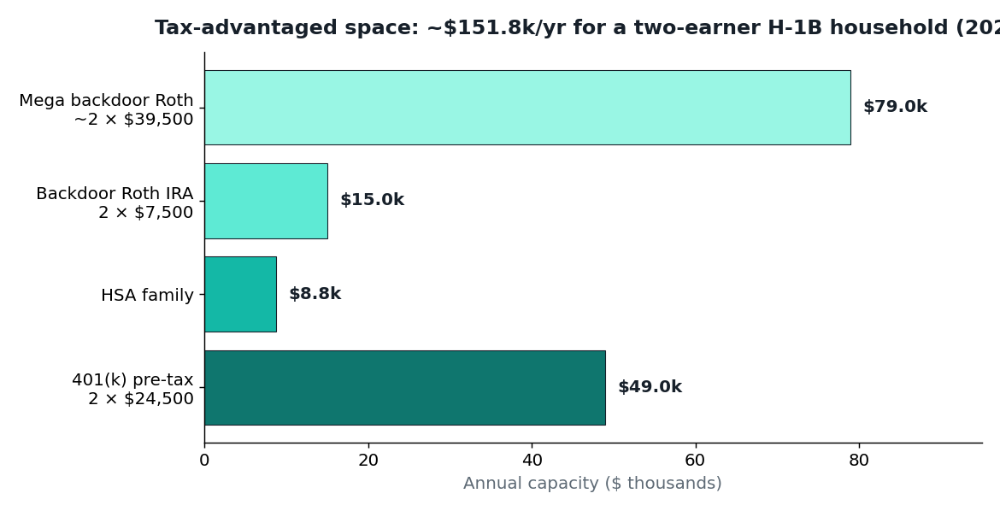
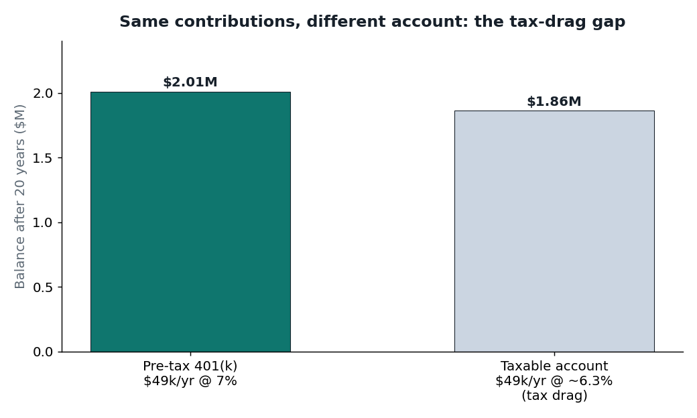
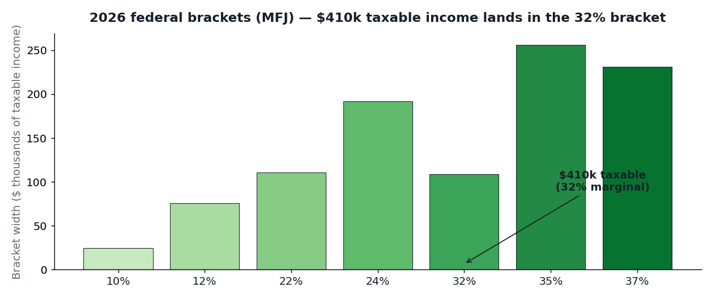

If you're on an H-1B earning big-tech money, you have a strange problem: one of the highest household incomes in America, and one of the shortest lists of things you're allowed to do with it. No side business. No freelancing. No "just start an LLC and flip houses" — at least not without immigration counsel signing off first.
But the tax code doesn't care about your visa status. Every tax-advantaged account a citizen can use, you can use. Most H-1B households I know leave $50,000+ of annual tax-advantaged space on the table every single year. Over a decade, that's a seven-figure mistake.
Here's the playbook, with 2026 numbers.
Rule zero: know what the visa forbids
Your H-1B authorizes you to work for your sponsoring employer, in the sponsored role. That's it. What this means for money:
- Allowed: W-2 salary, passive investing (stocks, ETFs, mutual funds), rental real estate held passively (with a property manager — never DIY landlording), interest, dividends.
- Not allowed without separate authorization: freelancing, consulting on the side, running an active business, day-trading as a business. "Passive" is the operative word.
- Gray zone: an LLC is a clean container for authorized income, not a magic shield. Anything that looks like unauthorized work is an immigration problem first and a tax problem second.
This is general information, not legal advice. If you're anywhere near the line, talk to an immigration attorney before you move money. The stakes are your status, not just your tax bill.
The waterfall: where each dollar goes
Think of your savings as water filling buckets in order. You fill each tax-advantaged bucket before a dollar spills into the next:
Bucket 1 — 401(k) to the full employer match. Free money. If your employer matches 50% up to 6% of salary, that's an instant 50% return. Nothing in the market competes.
Bucket 2 — Max the 401(k): $24,500 per person (2026). Pre-tax or Roth. At a 32–35% marginal rate, every pre-tax dollar saves you ~33 cents of federal tax today. Two working spouses: $49,000/year of space.
Bucket 3 — HSA: $8,750 family (2026), if you have a qualifying high-deductible health plan. Triple tax advantage: deductible going in, grows tax-free, tax-free coming out for medical expenses. After 65 it works like a Traditional IRA for any expense. This is the best account in the tax code and the most underused.
Bucket 4 — Backdoor Roth IRA: $7,500 per person (2026). Direct Roth IRA contributions phase out for married couples at $242,000–$252,000 MAGI — which most H-1B tech households blow past. The backdoor (contribute to Traditional, convert to Roth, no income limit on conversions) still works. Two spouses: $15,000/year into Roth space.
Bucket 5 — Mega backdoor Roth: up to $72,000 total per 401(k) (2026). If your plan allows after-tax contributions plus in-service Roth conversions, you can fill the gap between ($24,500 deferral + employer match) and the $72,000 annual limit with after-tax dollars that become Roth. With an $8,000 match, that's ~$39,500 per person of extra Roth space — ~$79,000 per household.
Bucket 6 — Taxable brokerage. Whatever's left. Prefer broad index funds; hold over a year for long-term capital gains rates (0%/15%/20% — for MFJ the 0% rate covers gains up to $98,900 taxable income in 2026).
Bucket 7 — 529 if you have kids. State-tax benefits vary (California gives you none — no state deduction), but the federal treatment (tax-free growth for education) still works.

Add it up: $49,000 + $8,750 + $15,000 + $79,000 ≈ $151,750 per year of tax-advantaged space for a two-earner household with a generous 401(k) plan. Even without the mega backdoor, it's ~$72,750. Most people use a third of that.
The math: what maxing it out is actually worth
Take a household earning $500,000 W-2, married filing jointly, both spouses maxing pre-tax 401(k)s and funding the family HSA:
- Gross: $500,000
- Minus 401(k): −$49,000 → $451,000
- Minus HSA: −$8,750 → $442,250 AGI
- Minus standard deduction ($32,200): → $410,050 taxable
- Federal income tax (2026 MFJ brackets): ≈ $84,100 — marginal rate 32%, effective rate ≈ 16.8%
Now compare: skip the 401(k)s and your taxable income is ~$467,800, federal tax ≈ $103,300. Those two 401(k)s saved roughly $19,000 in federal tax this year alone — and the money is still yours, compounding.

At 7% annual returns, $49,000/year for 20 years is roughly $2.0 million — and in the pre-tax 401(k) none of the growth was taxed along the way. In a taxable account, dividend and capital-gains drag shaves roughly a fifth off the ending balance. The account choice is a six-figure decision, not a rounding error.

What not to do
- Don't skip the match. Ever. It's the only guaranteed 50–100% return in finance.
- Don't do the backdoor Roth wrong. The pro-rata rule: if you have existing pre-tax IRA money, a conversion gets taxed proportionally. Roll old pre-tax IRAs into your 401(k) first to keep the backdoor clean.
- Don't buy whole life insurance as an "investment." High fees, low returns, sold on commission. Buy term life if you need coverage; invest the difference.
- Don't let the visa push you into cash. I've seen H-1B friends hold six figures in savings accounts "because what if." Keep 3–6 months of expenses liquid. The rest should be working.
- Don't forget the exit scenario. If you ever leave the US, 401(k) withdrawals as a nonresident get hit with 30% withholding (treaty rates vary). Roth money you've already paid tax on is cleaner to take with you. Diversify account types, not just investments.
Takeaways
- Your visa restricts your labor, not your capital. Use every account the tax code offers.
- Fill the waterfall in order: match → $24,500 401(k) → $8,750 HSA → $15,000 backdoor Roth → mega backdoor → taxable.
- A two-earner H-1B household has ~$150k/year of tax-advantaged space. Most use a fraction.
- At a 32–35% marginal rate, pre-tax contributions are worth ~33 cents on the dollar this year.
- Anything near the work-authorization line goes through an immigration attorney first. The tax tail never wags the status dog.
Not tax, legal, or investment advice. Tax law changes; verify current IRS figures and talk to a CPA for your situation. Immigration questions go to an immigration attorney — always.